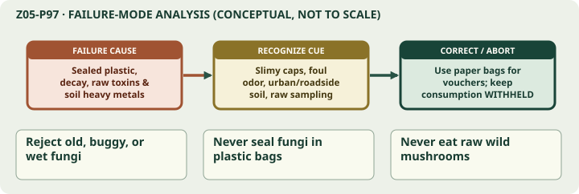

Z05-P97 · Wild foods and poisonous lookalikes · New manuscript
Fungal Decay, Heavy-Metal Bioaccumulation and Raw Cooking Warnings
Enforce strict hygiene against decayed sporocarps, sealed-plastic bacterial spoilage, heavy-metal uptake, and raw wild-mushroom toxicity.
When it applies · All macrofungi observation, collection law, and toxicology education.
Equipment · Breathable paper/wax bags for voucher study only; zero sealed plastic bags.

Actions
- Never store study or voucher mushrooms in sealed plastic bags because trapped moisture triggers rapid bacterial decomposition and secondary GI toxins even in non-toxic species.[B05, B08]
- Recognize that wild fungi bioaccumulate heavy metals (lead, cadmium, arsenic, mercury) and herbicides from urban parks, lawns, roadsides, and old orchards, and that many species (including true morels) contain heat-labile toxins when raw.[B08, B19]
- Remember equally that cooking NEVER destroys heat-stable lethal toxins such as amatoxins (Amanita, Galerina) or orellanine (Cortinarius); all Z05 fungal consumption remains strictly WITHHELD_HOLD.[B06, B07, B24]
Failure recognition · Bagging damp mushrooms in plastic or tasting raw wild mushrooms causes severe gastrointestinal poisoning, while cooking lethal amatoxin fungi provides zero protection.[B06, B07, B08]
Verify · Breathable paper handling, clean non-urban site screening, and permanent consumption HOLD are upheld.[B08, B19, B24]
Stop or change course · Stop handling decayed, slimy, or maggot-ridden fungi and call 1-800-222-1222 immediately for any raw or cooked wild-mushroom ingestion with symptoms.[B08, B09]
Evidence and editorial notes
- B05 · MyCoPortal · North American Fungal Voucher Collections Portal (Current web edition)
- Section: Separate fungal voucher collections and microscopic/macro traits · Conditions: Documenting macrofungi across North American collections
Support: Fungal taxonomy requires distinct anatomical schemas (cap, gills/pores/teeth, attachment, ring, volva, spore print, substrate, and often microscopy).
Limitations: Fungal species complexes frequently overlap macroscopically; photos alone cannot confirm edibility. · Conflicting evidence: None noted.
Editorial note: Keeps botanical and fungal schemas separate. · Specialist reviewer: Qualified mycologist
Primary source · checked 2026-11-25 - B06 · CDC MMWR · Notes from the Field: Severe Mushroom Poisoning — Minnesota 2018 (MMWR 68(21))
- Section: 2018 incident and cited 2006 Minnesota outbreak · Conditions: Minnesota case evidence from distinct incidents
Support: The 2018 report describes A. muscaria intoxication. It separately cites a 2006 Minnesota outbreak involving A. bisporigera and amatoxin.
Limitations: Do not conflate the clinical syndromes, use the reports to identify a specimen, or infer a reliable symptom clock. · Conflicting evidence: Conditions are recorded in the A03 audit.
Editorial note: Critical Minnesota fungal hazard evidence. · Specialist reviewer: Medical toxicologist and mycologist
Primary source · checked 2026-11-25 - B07 · CDC MMWR · Amanita phalloides Mushroom Poisonings — 2026 Outbreak Report (MMWR 75(20))
- Section: Amanita phalloides outbreak and amatoxin lethality (MMWR 75:20) · Conditions: Recognizing lethal Amanita lookalike risk and cooking myths
Support: Amatoxins in death cap and destroying angel species survive boiling, freezing, and drying; misidentification causes acute liver failure and death.
Limitations: Never rely on folklore tests, boiling, peeling, or visual similarity to safe regional species. · Conflicting evidence: None noted.
Editorial note: Prohibits boiling/peeling mushroom myths. · Specialist reviewer: Medical toxicologist and mycologist
Primary source · checked 2026-11-25 - B08 · North American Mycological Association · Mushroom Poisoning Syndromes Reference (Current web edition)
- Section: Mushroom poisoning syndrome classes and specimen retention · Conditions: Evaluating suspected wild fungal exposure
Support: Mushroom toxins span distinct syndromes (amatoxins, gyromitrin, orellanine, muscarine, ibotenic acid, GI irritants) with onset from minutes to days.
Limitations: Save remaining uneaten mushroom pieces in a paper bag (not sealed plastic) for mycologist identification if exposure occurs, and call Poison Control immediately. · Conflicting evidence: None noted.
Editorial note: Grounds Z05 fungal toxicology & emergency referral. · Specialist reviewer: Mycology toxicology reviewer
Primary source · checked 2026-11-25 - B09 · National Capital Poison Center · First Aid for Poisonings (Current web edition)
- Section: When to call 911; get help from poison experts · Conditions: Suspected poisoning in the United States
Support: Call 911 for collapse, seizure, trouble breathing or inability to wake. Otherwise promptly call Poison Help at 1-800-222-1222.
Limitations: Use route- and substance-specific advice. Do not wait for symptoms or collect unknown material if doing so risks exposure or delays care. · Conflicting evidence: Conditions are recorded in the A03 audit.
Editorial note: Mandatory Z05 poison-response escalation. · Specialist reviewer: Clinical toxicologist / Poison Center
Primary source · checked 2026-11-25 - B19 · Minnesota DNR · Terrestrial Invasive Plants and Toxic Lookalikes (Current web edition)
- Section: Terrestrial invasive species and roadside contamination hazards · Conditions: Disturbed corridors, edges, and utility rights-of-way
Support: Roadsides and invasive-dominated corridors are frequently sprayed with herbicides and accumulate runoff metals and road salts.
Limitations: Never collect food plants from roadsides, industrial lots, sprayed corridors, or contaminated floodplains even if species identity is certain. · Conflicting evidence: None noted.
Editorial note: Separates species ID from site-contamination safety. · Specialist reviewer: Environmental health and botanist
Primary source · checked 2026-11-25 - B24 · National Capital Poison Center · Mushroom poisoning: prevention and response (Current reference)
- Section: Prevention tips and what to do after ingestion · Conditions: Wild mushroom recognition and suspected ingestion
Support: Lookalikes can fool observers. Avoid eating wild fungi on unverified identification and seek poison-centre advice promptly after suspected ingestion.
Limitations: Reject folk tests and generated-image clearance as an editorial restriction. Preparation cannot substitute for poison risk or identification review. · Conflicting evidence: Conditions are recorded in the A03 audit.
Editorial note: Enforces Z05 fail-closed edibility rule. · Specialist reviewer: Botanist, mycologist, and clinical toxicologist
Primary source · checked 2026-11-25
Source lineage · New manuscript (Z05 P19-C fungal toxicology) · Classification · New manuscript.